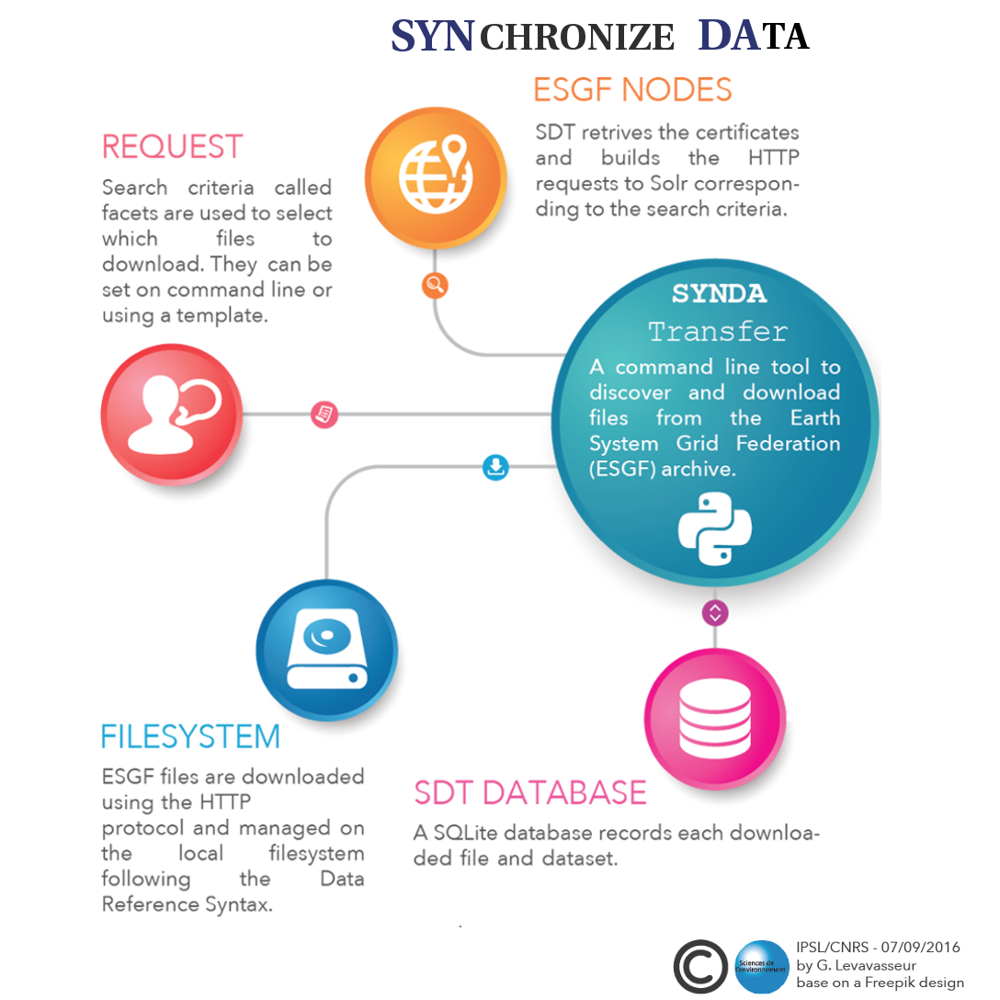

Synda documentation
Synopsis
synda is a command line tool to search and download files from the Earth System Grid Federation (ESGF) archive.
{kind=link}
Content
Table of contents
- Synda overview
- Installation and upgrade
- Synda installation from source guide
- Synda Upgrade Guide
- Synda upgrade guide (installation from source)
- Download Guide
- Configuration parameter reference
- daemon.user
- daemon.group
- download.max_parallel_download
- download.hpss
- download.http_fallback
- download.direct_http_timeout
- download.async_http_timeout
- download.direct_db_timeout
- download.async_db_timeout
- download.streaming_chunk_size
- module.download
- module.post_processing
- module.globustransfer
- post_processing.host
- post_processing.port
- log.verbosity_level
- log.scheduler_profiling
- core.security_dir_mode
- core.metadata_server_type
- core.default_path
- core.selection_path
- core.data_path
- core.db_path
- core.sandbox_path
- interface.unicode_term
- interface.progress
- interface.default_listing_size
- interface.dump_listing_limit_for_small_mode (NEW)
- interface.dump_listing_limit_for_medium_mode (NEW)
- interface.dump_listing_limit_for_big_mode (NEW)
- interface.list_listing_limit_for_small_mode (NEW)
- interface.list_listing_limit_for_medium_mode (NEW)
- interface.list_listing_limit_for_big_mode (NEW)
- interface.search_listing_limit_for_small_mode (NEW)
- interface.search_listing_limit_for_medium_mode (NEW)
- interface.search_listing_limit_for_big_mode (NEW)
- interface.show_advanced_options (NEW)
- behaviour.onemgf
- behaviour.check_parameter
- behaviour.ignorecase
- behaviour.nearest
- behaviour.nearest_mode
- behaviour.lfae_mode
- behaviour.incorrect_checksum_action
- index.indexes
- index.default_index
- locale.country
- globus.esgf_endpoints
- globus.destination_endpoint
- api.esgf_search_chunksize (NEW)
- api.esgf_search_http_timeout (NEW)
- Synda Files and Folders
- Synda command reference
- Advanced configuration parameter reference
- [logger].feeder_name
- [logger].consumer_name
- [logger].domain_name
- [logger].feeder_file
- [logger].consumer_file
- [logger].domain_file
- [checksum].type_md5
- [checksum].type_sha256
- [api].esgf_search_domain_name
- [processes].chunksize
- [processes].http_client
- [processes].transfer_protocol
- [processes].get_files_caching
- [hack].projects_with_one_variable_per_dataset
- [sub command get].display_downloads_progression_every_n_seconds
- How to & tutorial
- Download Tutorial
- Selection file
- Selection file parameter reference
- Download the nearest replica
- ESGF replication howto
- Select which ESGF index to use
- Synda FAQ
- Changelog
- Synda Project
- Credits
- License and Disclaimer